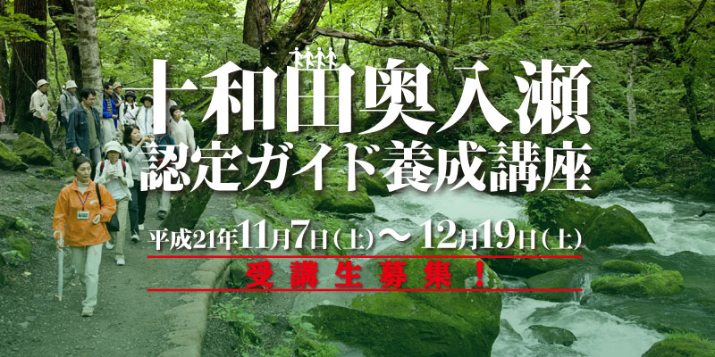
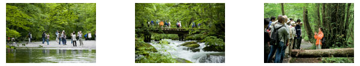
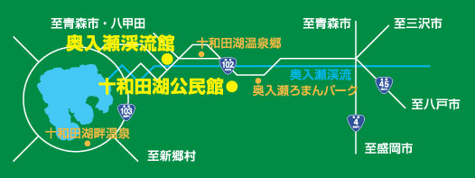
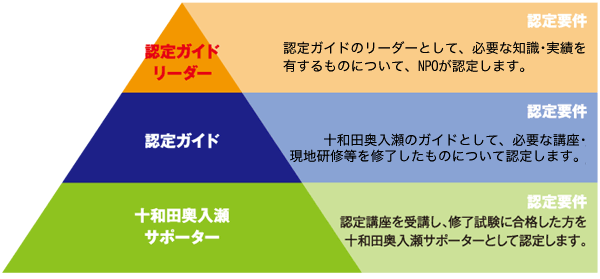
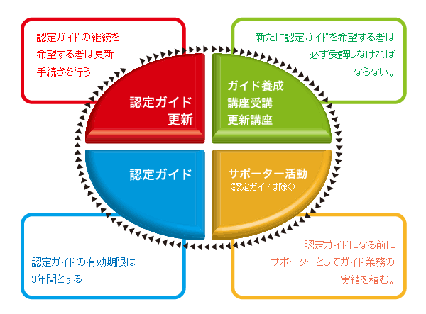

十和田奥入瀬認定ガイド養成講座について
十和田奥入瀬認定ガイドは、十和田奥入瀬地域における豊富で貴重な自然や、歴史・文化を守りながら、広く全国に発信していく、社会貢献活動として魅力が大きくやりがいがあるものです。この度、NPO法人十和田奥入瀬郷づくり大学では、ガイドとして必要なノウハウを学べる｢十和田奥入瀬認定ガイド養成講座｣を開設します。
「十和田奥入瀬認定ガイド養成講座」募集資料は[こちらから］

日程
サポーター講座Ⅰ・Ⅱ
11月7日(土)・8日(日) 10:00～17:00
十和田湖公民館
奥入瀬渓流ガイド現地研修会
11月14日(土) 9:00～16:00
サポーター講座終了試験
11月21日(土) 10:00～12:00
十和田湖公民館
サポーター証授与式
12月19日(土) 13:00～14:00
奥入瀬渓流館
受講対象者
十和田奥入瀬に関心のある方
受講定員
40名
- 定員になり次第、申込を締め切ります。
- 受講の可否、受講日程等については後日、郵送でお知らせします。
受講料金
サポーター講座Ⅰ・Ⅱ 各1,000円
※現地研修2,000円(保険料含む)
受講料は回毎に、当日受付で納付ください。
なお、一度お納めいただいた受講料は、不慮の事故などやむを得ない場合を除き、お返しできません。
募集締め切り
平成21年10月22日(木) ［お申込はこちらから］
受講場所
奥入瀬渓流館 青森県十和田市大字奥入瀬字栃久保183 TEL..0176(74)1170
十和田湖公民館 青森県十和田市大字奥入瀬字下川目126 TEL..0176(72)2102

十和田奥入瀬認定ガイド制度

十和田奥入瀬認定ガイド制度のサイクル

十和田奥入瀬認定ガイド養成講座カリキュラム
| 講座分類／テーマ | 地域検証 | 地域自然検証 | 地域歴史産業 | 安全管理 |
| 講義名 | 講義名 | 講義名 | 講義名 | |
| サポーター講座Ⅰ・Ⅱ | 奥入瀬渓流概論 | 奥入瀬の大自然 |
十和田湖の水資源 | 救急基礎 |
| 十和田湖概論 | 樹木の見分け方 | 十和田湖と大町桂月 | ||
| 蔦・八甲田山概論 | 十和田湖・奥入瀬・八甲田の主な樹木 | 十和田市の産業 | ||
| 十和田湖・奥入瀬・八甲田の主な植物 | ||||
| 認定ガイド講座 | 国立公園概要 | 世界遺産について | 自然災害論 | |
| 十和田湖・奥入瀬・八甲田の主な動物 | 十和田の歴史 |
| 現地研修 |
奥入瀬渓流ガイドⅠ | 奥入瀬渓流ガイドⅡ | 十和田湖ガイド | 蔦・八甲田ガイド |
※今年度は認定ガイド講座は開催しません。 ※現地研修は、サポーター業務の実績として認定します。
十和田奥入瀬 認定ガイド養成講 受講申込
以下よりPDFファイルをダウンロードしてFAXでお申込ください。
主管／NPO法人十和田奥入瀬郷づくり大学
お問合せ先／NPO法人十和田奥入瀬郷づくり大学 〒034-0301 青森県十和田市大字奥入瀬字小沢1259-1 Tel.Fax0176(74)1770